Mary Anning
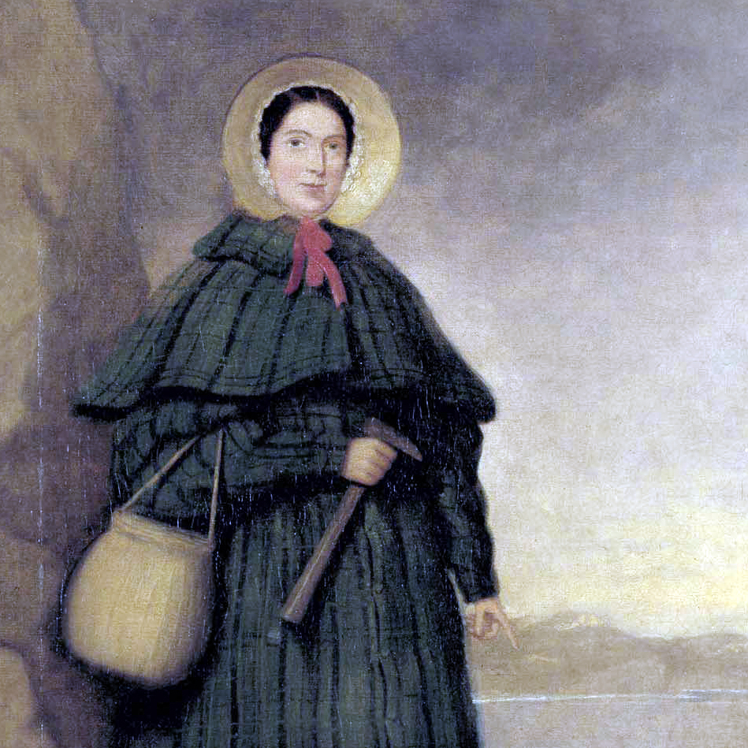
Mary grew up by the seaside of England, where she learned how to collect fossils from the cliffs along the English Channel from her father. It was dangerous work, as the best time for fossil collecting was after landslides and the winter months. However, despite the hardships she became one of the leading paleontologists of the 19th century, discovering the first ichthyosaur skeleton and several other complete dinosaur skeletons. However, due to her gender and lower class standing she was often not recognized for her contributions despite the fact that she played an enormous role in moving the field of paleontology further by doing an in-depth analysis of cephalopods and other smaller fossilized findings.
Émilie du Châtelet
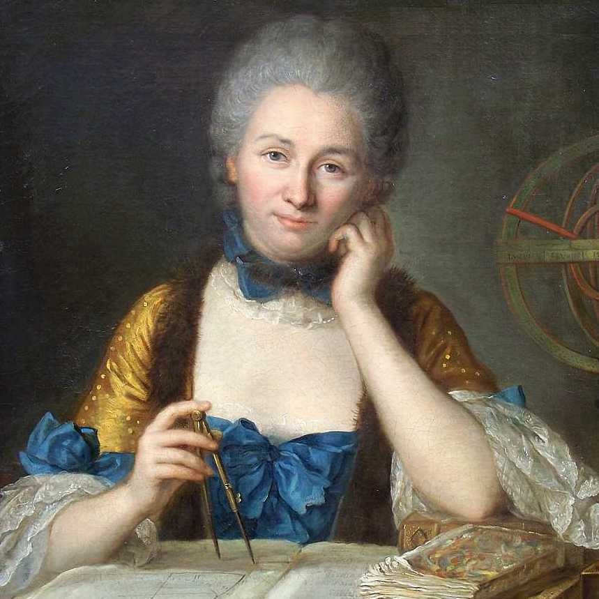
Émilie was born in 1706 in Paris. She was encouraged by her nobleman father to pursue her interests in philosophy, astronomy, and the natural sciences. As she grew older she focused more on her family, but never gave up on understanding the world. In 1733 she restarted her studies focusing on maths and sciences, and not long after she wrote her most famous publication Institutions de Physique where she advocated for theories in kinetic energy to be widely accepted in the scientific community. She translated all of Sir Isaac Newton's scientific works into French. Her translations were published after her death due to childbirth in 1749.
Marie Curie
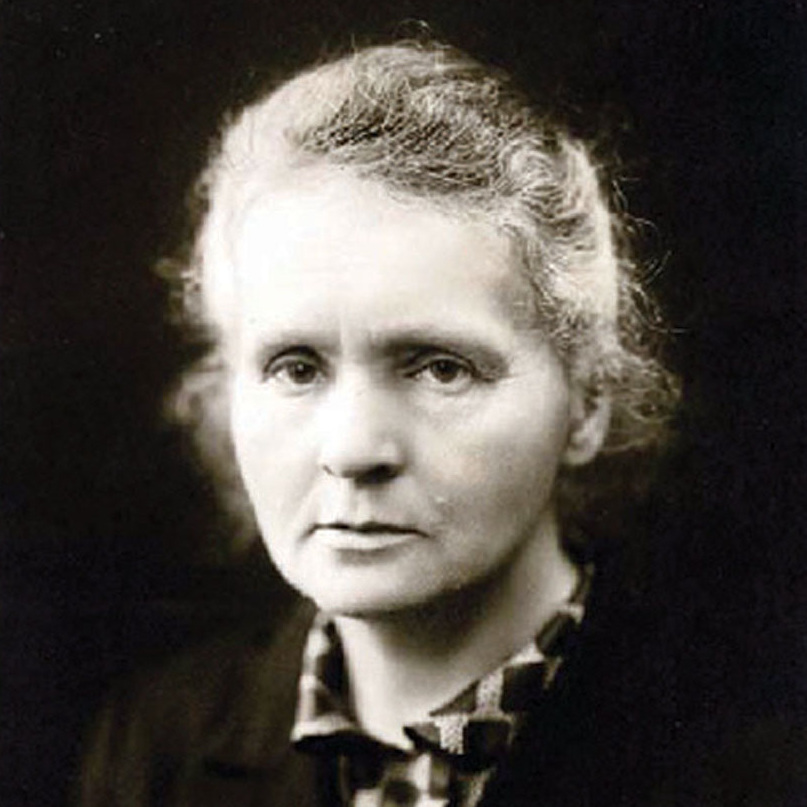
Maria Salomea Skłodowska was born in Warsaw in 1867, at a time when Poland was part of the Russian Empire. Her family assisted in the January Revolutions trying to win back Poland's freedom. They ended up losing much of their property and wealth, thus driving her to move to Paris to gain her education. She became an instructor at the School of Physics and Chemistry, where she met her lab partner and eventual husband, Pierre Curie. Drawn together by mutual interests, they began studying new elements in uranium and developed theories and several experiments in radiation, as well as discovering elements themselves that had radioactive properties. These findings lead her to become the first women to ever be awarded the Nobel Peace Prize in 1903.
Rosalind Franklin
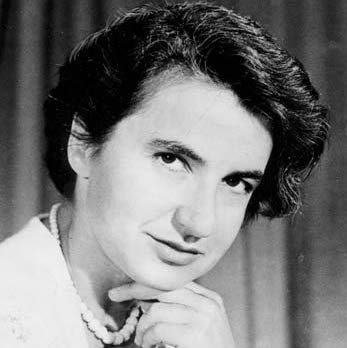
Rosalind was born and raised in London, and studied natural sciences at Newnham College in Cambridge. While she worked under Ronald Norrish in pursuits of chemistry, he was dismissive of her ideas and would not give her proper work. Rosalind gave up working with him and began her research at BCURA during World War 2, helping in the creation of gas masks. She later moved to study in Paris, and then at King's College in London where she was critical in discovering the essence of DNA and it's role in the human body. She passed away in 1958 due to ovarian cancer and was recognized for her contributions to science only long after her death.
Katherine "The Human Computer" Johnson
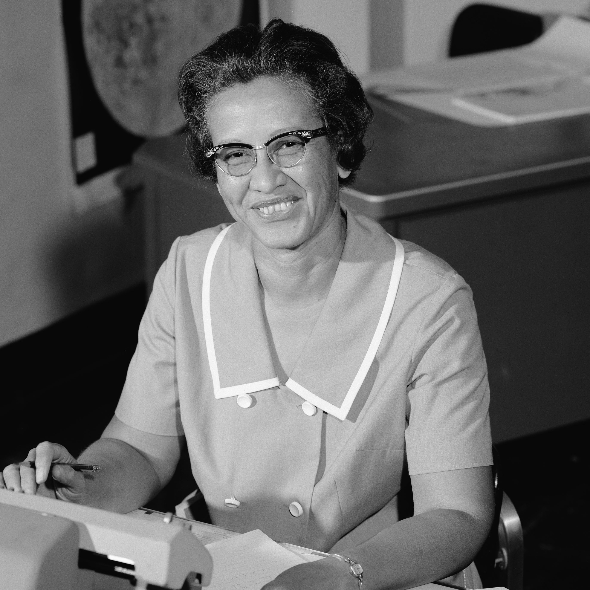
Katherine grew up in West Virginia, graduating high school at 14 years old, college at 18, and was the first African-American woman to attend graduate school at West Virginia University in 1939, where she graduated at the top of her class in mathematics. In 1953, she was offered a job at NASA and became one of the earliest members of the NASA program. She calculated launch windows, plotted trajectory of rockets, drew space navigational charts, and verified all computer calculations by hand for the Mercury and Apollo missions. She was an integral member of the NASA team and gained over 15 awards for her work in mathematics and space engineering.
Hedy Lamarr
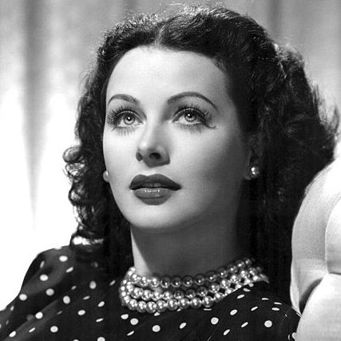
Hedy was born and raised in Austria in 1914 and spent much of her youth interested in inventing and tinkering. She was completely self-taught, and her first invention was an improved traffic light. During World War 2 she created a jam-proof radio guidance system for torpedoes. Together with composer George Antheil, she drafted designs for a new frequency-hopping, spread-spectrum technology that they later patented. She later updated this design in 1962, which became the basis for WiFi and Bluetooth technologies. Inventing was a difficult to affort hobby despite her successful patents. To help cover the costs she took up acting in her youth.
Margaret Mead
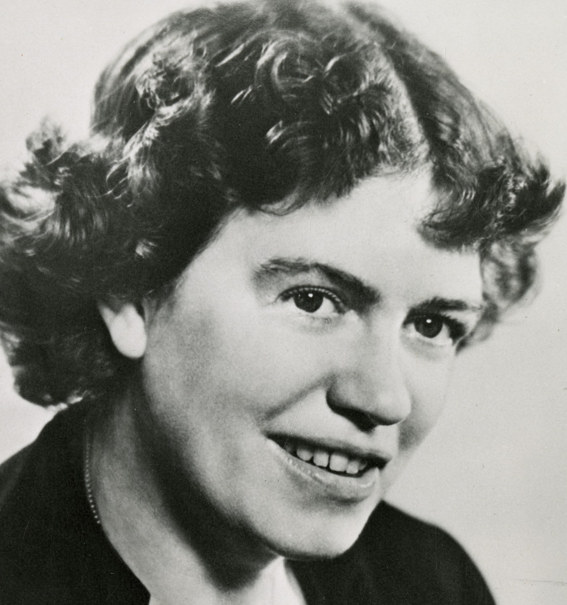
Margaret grew up in Pennsylvania in the early 1900's and pursued her career in anthropology under Franz Boas and Ruth Benedict at Barnard and Columbia University. She traveled across the Pacific to study the Samoan culture, where she penned her first book Coming of Age in Samoa. The theme of growing up, exploring one's sexuality, and the cultural traditions around this, especially for women, became a major part of her research and teachings. While she faced criticisms for her research methods and conclusions, she remained one of the major leadering researchers in anthropology. She was even awarded the Presidential Medal of Freedom for her activism by President Jimmy Carter after her death.
Raye Montague
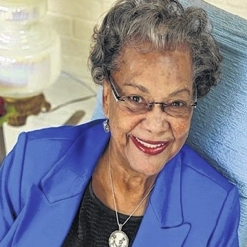
Raye first boarded a submarine at age 7, when the American navy brought a captured German submarine to a port in Arkansas for showing. The tour ignited her interest in engineering and computers, which she studied despite being denied entry to the University of Arkansas due to her race and gender. She still managed to join UNIVAC and proved capable of manning the computer alone. She became one of the top computer engineers in the US Navy services. In the 1970's she began working on the construction of ships and submarines and was given the challenge of designing a large scale, computerized naval ship. The officials gave her a month to create a blueprint - so she did it in 19 hours.
Cecilia Payne-Gaposchkin
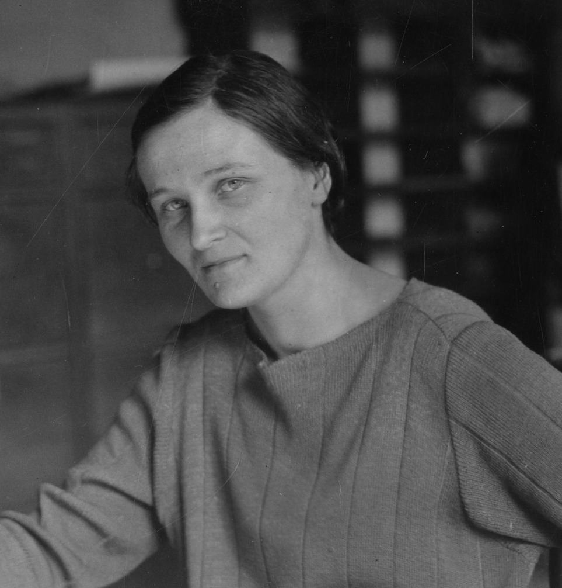
Cecilia grew up in the UK and was awarded a scholarship to study at Newnham College in Cambridge where she tested and studied the theory of relativity and an array of other science topics. Due to Cambridge's policy she was not given her degree at graduation. In order to advance her career in science, she moved to America and attended the astronomy program at Harvard. It was here she studied the makeup of stars, gases and other major components of the Milky Way galaxy. She paved the way for women in sciences at Ivy League colleges.
Merit Ptah
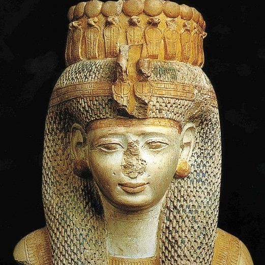
Ptah lived in Egypt during 2700 BCE during the second or third dynasty of Ancient Egypt. She is the first woman recorded and known by name in the field of medicine, potentially the first recorded female scientist in history. She was a chief physician. The largest crater on Venus is named after her.
Tu YouYou
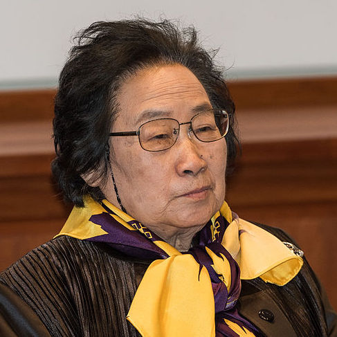
Tu was born in Zhejiang China and studied pharmaceutical chemistry and sciences at Beijing Medical University. After graduating in 1955 she continued to study traditional Chinese medicine to further understand the origin of several major medicines. She has been widely recognized for her malaria research. With extensive studies of herbs, particularly qinghao, or sweet wormwood, she found a way to extract a particular chemical from the herb and created artemisinin - the main ingredient in the cure for malaria. She received a Nobel Peace Prize for her findings in 2015.
Fatima Muhammad Al-Fihri Al-Quraysh
Special Mention for pursuits in higher public education
Fatima was born and raised in North Africa in the early 800s, where she was educated thanks to the wealth of her father's business. She believed, however, that everyone should have access to education if they wished to pursue it. Alongside her sister and with the money they inherited from their family, they opened the University of Qarawiyyin in 859 AD. It is considered the world's oldest open university and the world's oldest library.